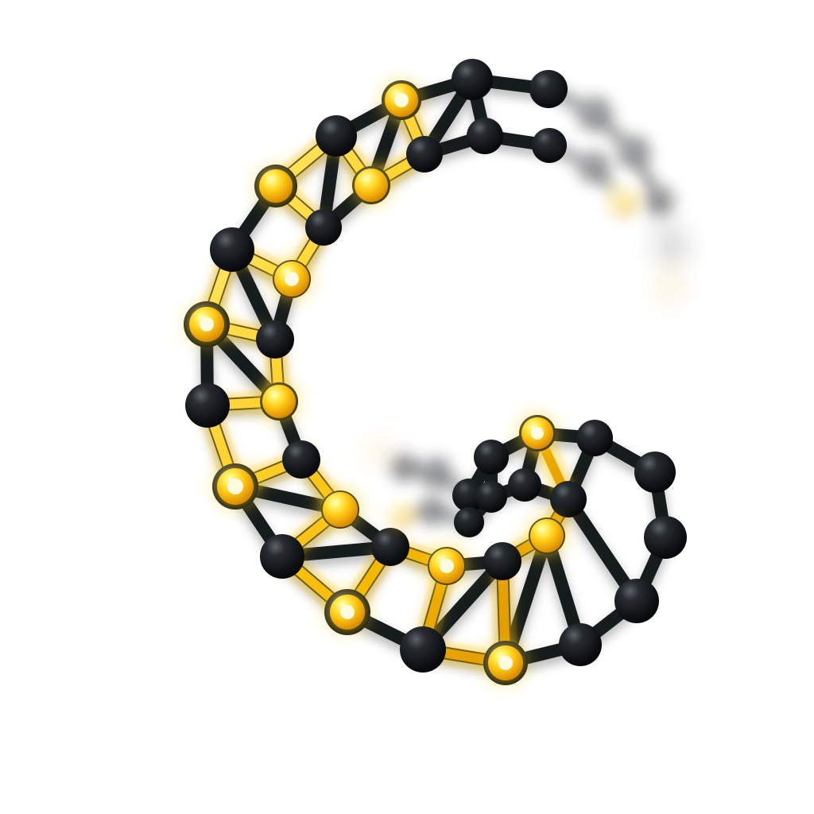

01 / INVESTMENT RESEARCH
How have a fund's holdings changed?
Find the stocks linked to a fund, then read its recorded holdings over time.
Example to follow
Sample data · Query · Result

GraphFin.OPEN-SOURCE GRAPH DATABASE
Store connections, prices, and holdings together. Follow a relationship to find the data you need, then see how it changes over time.
Open source on GitHub
A stock has its price history. A fund’s connection to that stock has its holding history. Follow these connections to find the records you want to read.
See how the data is storedWorked examples are being prepared. Each will include sample data, a query, and its result.
View the existing finance script01 / INVESTMENT RESEARCH
Find the stocks linked to a fund, then read its recorded holdings over time.
02 / EQUIPMENT MONITORING
Find a machine's sensors, then read their temperatures over the past hour.
03 / SUPPLY CHAINS
Find a company's suppliers, then compare their recorded delivery times.
Try GraphFin in a test environment. Tests cover restarts and restoring backups, with more reliability checks still underway.
See the test progress